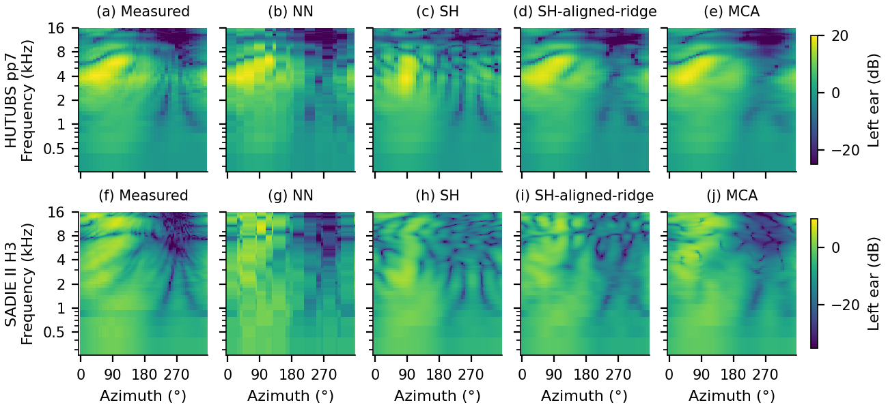

Binaural listening examples
Pink-noise bursts step around the listener on the horizontal plane in 10° steps, starting in front and moving towards the left ear (one full circle in about 7 s). Each example is rendered with the measured HRIRs or a reconstruction from a sparse uniform layout of M measured directions. All versions of one subject share one gain, so level differences are preserved. Use headphones.
Part of the ELEC5305 project Predicting Sparse HRTF Reconstruction Error from Sampling Geometry. Rendered by demo.py.

HUTUBS pp7 (held-out subject)
| Method | M = 25 | M = 50 |
|---|---|---|
| Measured | ||
| NN | ||
| SH | ||
| SH-aligned-ridge | ||
| SUpDEq-MCA |
SADIE II H3
| Method | M = 25 | M = 50 |
|---|---|---|
| Measured | ||
| NN | ||
| SH | ||
| SH-aligned-ridge | ||
| SUpDEq-MCA |